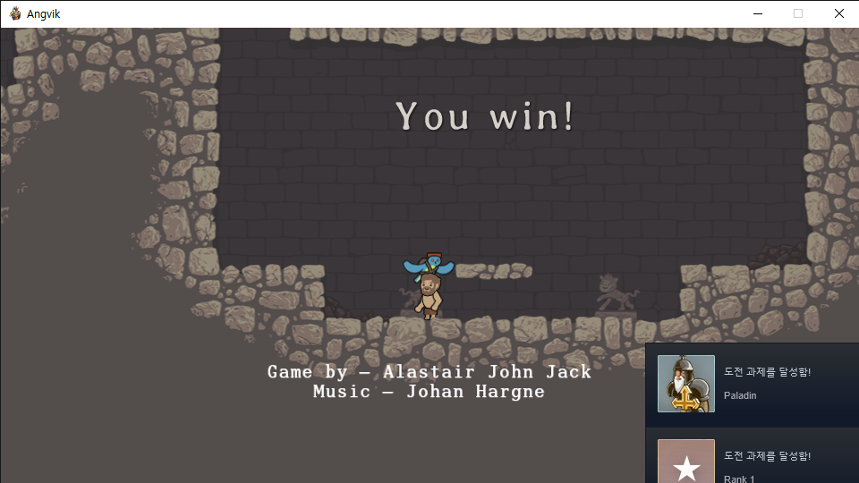

2021년 1월 7일 코딩을 처음 경험했다.
그래서 프로그래밍 줄 바꿈 하는 태그를 배웠다.
근데? 줄 2칸씩 띄우는 방법이 궁금하다.
어떻게 공간을 더 넣냐, 하면 줄바꿈 태그(앞태그)에 스페이스바 한번 넣고 style="margin-top:45px;" 를 추가 입력하면 된다. 이건 css인가.. 라는데 아직은 중요하지 않다고 한다.
1월 13일에는 이미지 삽입하는 법을 배웠다.
이미지 태그는 'img' 그리고 그 뒤에 스페이스바로 한 칸 떼고 source=""또는src="" 를 입력하여 큰따옴표 안에 이미지 주소 적으면 들어간다. 혹은 아톰으로 불러와서 파일 이름.확장자 까지 입력하면 된다.
이 src라는 것이 '속성'(attribute)이라는 html의 문법이다. 태그가 태그의 이름만으로는 부족할 때 속성으로 더 많은 의미를 부여하는 것이다.
그 다음 배운 것은 부모자식 관계이다. 이걸 왜 배우냐면, 웹을 만드는 데에 목차를 만들 때 필요하기 때문이다.
목차를 만들 때 쓰는 태그는 list, 즉 li 이다.
TIP! 아톰에서 코드 입력할 때, 컨트롤을 누르고 클릭 하면 여러 개가 선택된다. 이걸로 태그를 한 번에 입력 할 수 있음
목차를 만들 때, 목차에 ul이라는 li의 부모 코드로 목차 간의 구분을 줄 수 있다. 목차가 어디서부터 어디까지 연관되어 있는지, 그룹핑을 하기 위한 태그이다.
그리고 아톰에서 코드 입력할 때 코드를 비주얼적으로 정리하기 위해 원하는 부분을 드래그하여 tab키를 누르면 앞으로 한번 들여쓰기가 되어 정리되어 보인다. (코딩한 것 ul부분 봐보기)
부모태그 중 ul 대신 ol을 써보자. 목차에 자동으로 넘버링을 해 준다. ol은 ordered list 의 약자이다. ul은 unordered list 의 약자.
다음은 많은 내용을 정리하기 위한 체계를 배웠다.
태그 title은 웹페이지의 제목을 만들어주는 태그이다.
간혹 글씨가 깨지는 경우가 있는데 그것은 웹페이지가 utf8로 읽지 않았기 떄문이다.
이 문제는 meta charset="utf-8" 이라는 태그를 집어넣으면 해결됨
본문과 본문을 설명하는 태그(맨위의 태그)를 구분하기 위해. 본문 태그는 body라는 태그로 묶어줘야 한다.(필수) 묶어준 뒤 바디 안의 내용들을 드래그하고 탭들여쓰기로 예쁘게 정리
본문을 설명하는 태그는 head로 묶는다. 즉 htmml의 모든 태그는 head 또는 body 이 두 태그 중 하나 아래에 놓이게 된다.
그 위에 최고위 태그 html을 입력해준다.(열고닫기 없음!) 그 위에 !doctype html 태그를 입력
링크를 거는법
링크를 걸고 싶은 부분에 a 태그로 감싼다. 소스는 ( href="https://www.naver.com/")
새 탭으로 열리게 하고 싶으면 뒤에 ( target="_blank")추가하면 된다.
탭을 열기 전에 그 탭이 무슨 탭인지 알려주고 싶으면 그 뒤에 ( title="사이트 이름")추가하면 링크에 마우스를 올렸을 때 나타난다.
다음은 목차에 링크를 걸어 각각의 페이지로 넘어가게 하는 것을 배웠다.
나는 뉴 파일을 일일이 만들어서 이름을 짓고 그 안에 상단 코드만 복붙을 했는데, 왼쪽 파일에 우클릭 하여 복사(duplicate)해서 이름만 다르게 입력해 편하게 만들 수 있다.